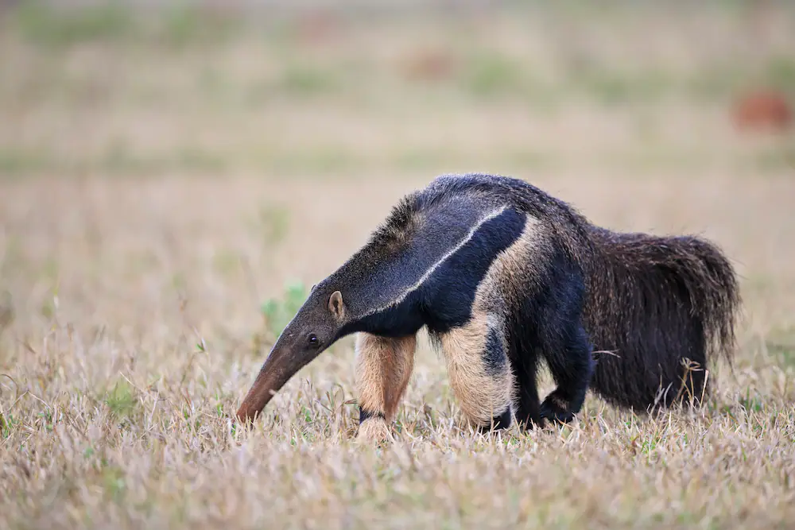
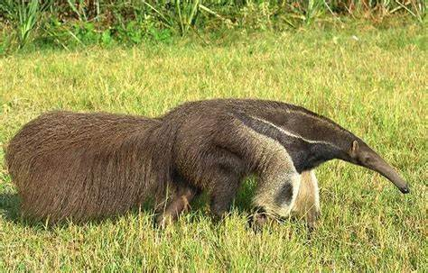
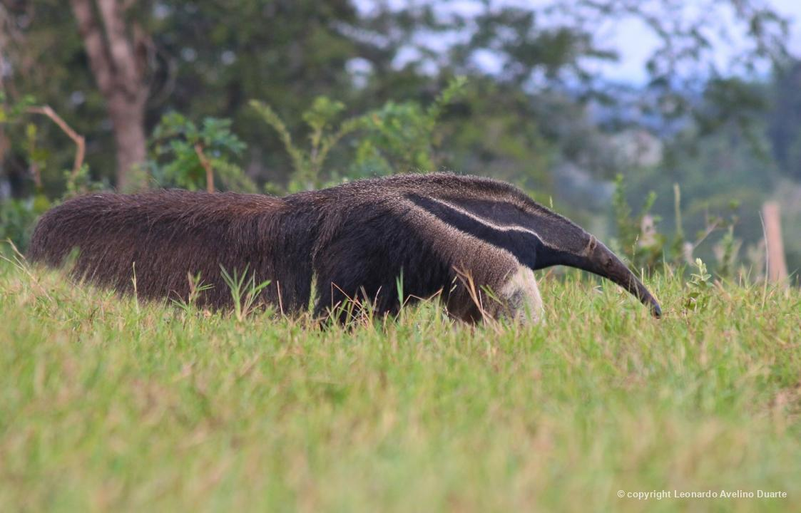
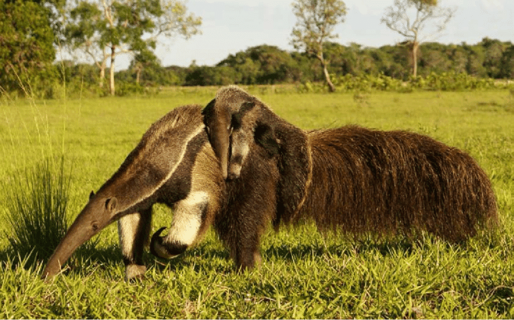
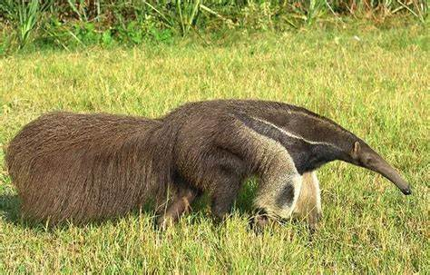
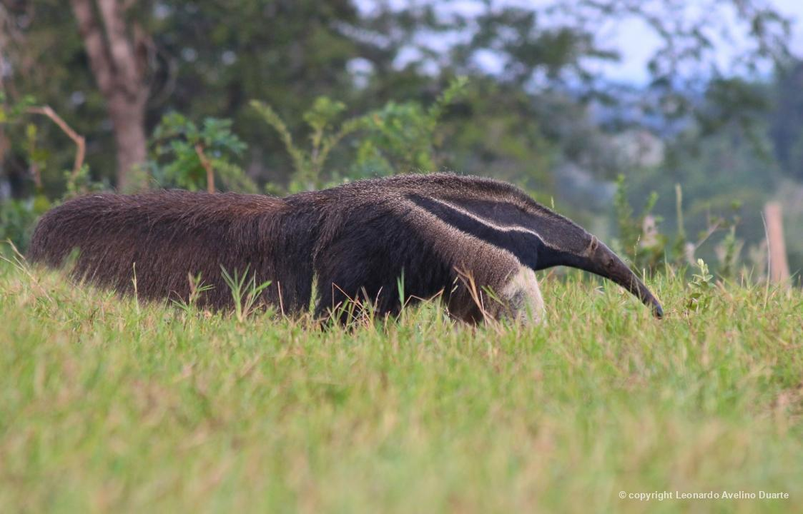
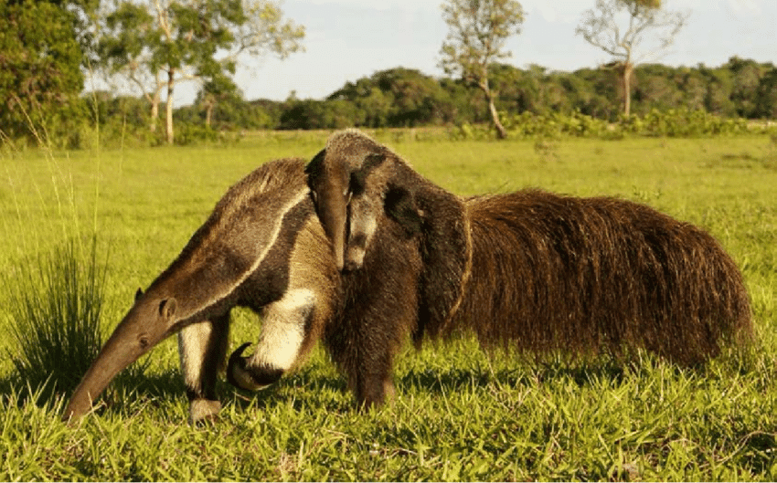
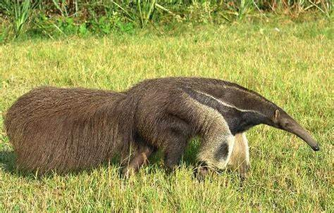
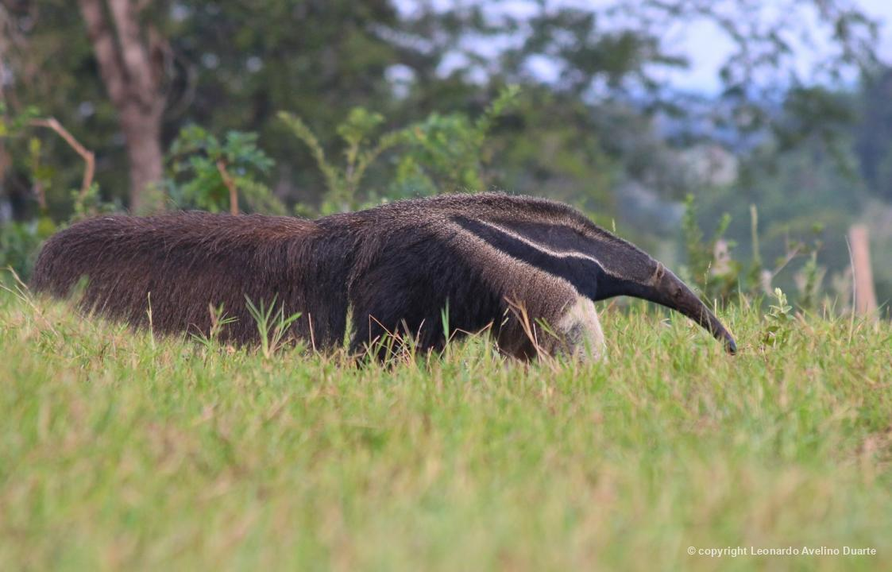
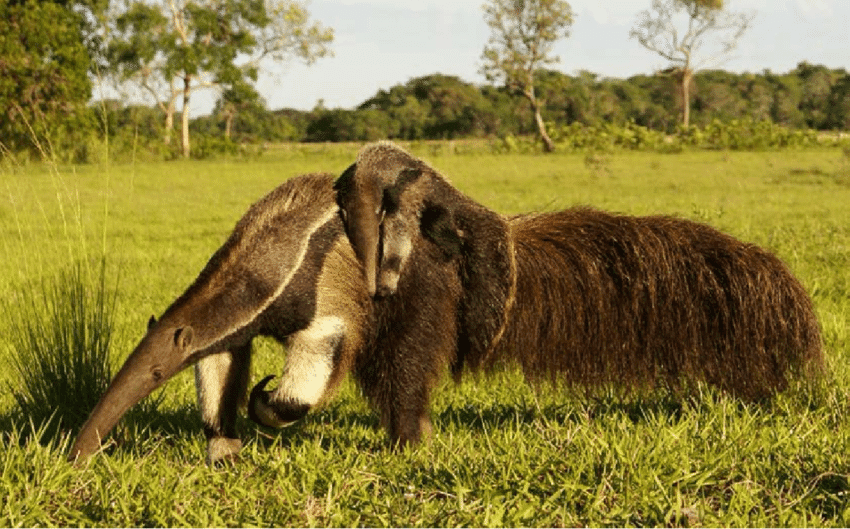

Tamanduá-Bandeira


 








INFORMAÇÕES SOBRE O ANIMAL
- Nome Científico: Myrmecophaga tridactyla
(Linnaeus, 1758) - Nomes Populares: Conhecido também como "tamanduá-bandeira" ou "tamanduá-de-bandeira"
Classificação Biológica
- Domínio: Eukaryota
- Reino: Animalia
- Filo: Chordata
- Classe: Mammalia
- Ordem: Pilosa
- Família: Myrmecophagidae
- Gênero: Myrmecophaga
- Espécie: M. tridactyla
Nutrição Geral e Hábitos Alimentares
- Tipo de Nutrição: Insetívoro
- O tamanduá-bandeira se alimenta principalmente de formigas e cupins, utilizando sua longa língua para capturar as presas. Sua dieta é composta quase exclusivamente por insetos, e ele passa a maior parte do tempo forrageando no solo e em árvores.
Morfologia
- Pelagem e Corpo
O tamanduá-bandeira possui uma pelagem espessa e lanosa, com uma distinta faixa preta e branca que lembra uma bandeira. Seu corpo é grande e robusto, adaptado para suportar seu estilo de vida predominantemente terrestre.
Órgãos Respiratórios
Seu sistema respiratório inclui narinas, fossas nasais, cavidade nasal, faringe, laringe, traqueia e pulmões, adaptados para sua vida terrestre.
Patas
As patas dianteiras são grandes e fortes, com garras grandes e curvas usadas para escavar e se defender. Comportamento
- O tamanduá-bandeira é um animal solitário e noturno, que passa a maior parte do tempo forrageando e descansando. Apesar de seu tamanho e aparência impressionantes, ele é geralmente tranquilo e evita confrontos. Sua comunicação é feita através de vocalizações e sinais corporais.
Ocorrência
- O tamanduá-bandeira é encontrado em várias regiões da América do Sul, incluindo Brasil, Venezuela, Colômbia, e parte do Paraguai e Argentina. Prefere habitats de florestas tropicais e subtropicais, além de áreas de cerrado e matas.
- Mapa de Ocorrência
Reprodução
- Sistema de Acasalamento: O tamanduá-bandeira é solitário, mas se reúne para a reprodução.
Reprodução ao Longo do Ano: A reprodução ocorre principalmente durante a estação chuvosa, quando há maior disponibilidade de alimentos.
Gestação: A gestação dura cerca de 190 a 190 dias.
Ninhadas: As fêmeas geralmente dão à luz um único filhote por vez, que é cuidado exclusivamente pela mãe até que esteja suficientemente desenvolvido para se alimentar sozinho.